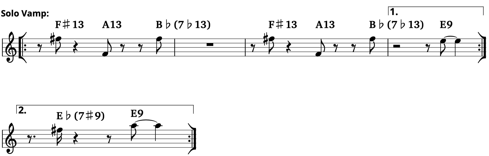
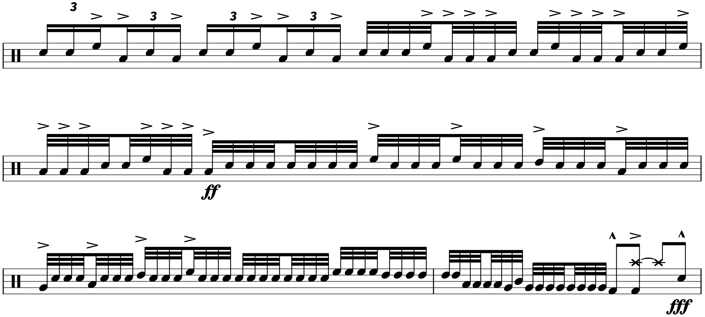
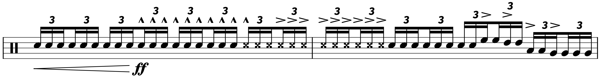

Transcription: “Jazz Crimes” — Tommy Igoe with The Tommy Igoe Groove Conspiracy

Oh, Tommy Igoe… you probably have one of two opinions of him. For many, Igoe is the mastermind behind Groove Essentials and Great Hands for a Lifetime, which are adored pieces of eduction for many drummers. I’ve spent quite some time with both, and they’re no doubt ambitious and well done projects.
On the other hand, you might have a very different opinion of Tommy if you’ve ever browsed his socials, especially his Instagram page. In fact, I often see threads on Reddit from drummers talking about Tommy’s behavior on the internet. This one was posted to r/drumming a couple of weeks ago, discussing Tommy’s penchant for going at it with internet trolls:

Most of the threads discussing Tommy aren’t flattering. Some of it has to do with Tommy acting up on Insta: feeding trolls, blocking people who disagree with him/his attitude, etc. Some of it involves people sharing personal experiences with Tommy, most of which happen to be bad: poor experiences in private lessons, in clinics, what have you.
There was a monster thread that was started about a year ago on r/Drums that amassed over 300 comments, which is a lot for a post on that sub. Some of the comment threads got off topic, but some highlights include Tommy being described as a “gatekeeper” and “an apostle to his own religion”.
I dunno, it’s all anecdotal. I haven’t met the guy, although I’ve had the chance — Tommy frequently plays/ed at the Yoshi’s club in Oakland, and I grew up nearby. But I haven’t got a chance to see him play.
I do think Tommy is a great educator (and most of Reddit would probably concede that); if it’s not because of Groove Essentials or Great Hands, it’s because of videos like this one. I also really enjoy just hearing/reading about his perspective on drumming and music — he seems congenial in video form, and the dude certainly knows what he’s talking about. In fact, I find myself empathizing with him quite a bit, as we both often seem to be at our wits’ end regarding the different trends and opinions drummers on the internet go through.
All the while, he does come off as a bit pugnacious on the internet, and I can’t imagine everyone on Reddit is lying. He doesn’t seem to get the same level of hate on YouTube or old school drum forums — if these opinions are unique to Reddit, I’m not sure why.
Of course, there’s one more thing to talk about: in addition to being an educator, Tommy is in fact a drummer. Many people aren’t that exposed to his playing on records — for most, it’s just YouTube videos. He played around in the studio quite a bit in the 90’s before dialing things back for the last 15 years to focus more on education. Tommy has also focused his time on the two bands that he fronts: The Birdland Big Band and The Tommy Igoe Groove Conspiracy.
Unfortunately, neither group has much material out there. Aside from a few live albums that are hard to get ahold of, each band has one studio album each. Wanting to know more about about Tommy as a drummer, I gave them a listen a few years ago.
Unsurprisingly, both albums are made up of jazz standards, with a more modern bent. For instance, the tune in question today is Joshua Redman’s “Jazz Crimes”, released in 2002. The second half of the song is dominated by an extended drum solo. Tommy played the tune on his Drumeo lesson, and the performance got a bit of traction.
But it doesn’t quite compare to what he played on the record. Because… bloody hell, it’s something else. On my “About Me” page, I declared this to be the most challenging transcription I’ve done so far, simply because there’s so much going on.
The first thing to discuss is the solo vamp — if you tap your foot along to the section beforehand, you’ll notice that the vamp is offbeat. I tried my best to pick the right chords, but there’s no consensus as to what’s being played:
Tommy starts by playing around the vamp with hi hat barks and cymbal taps. He then starts introducing five stroke rolls, with the last note of the roll played on the kick.
Things start to get out of hand around the 5:41 mark, when Tommy starts to dish out some gnarly double stops licks — eventually he starts playing a continuous run of 16th notes on the right hand, often subverting the vamp entirely. Quite challenging.
Things continue to escalate in the next big chunk of the solo, where Tommy unleashes a flurry of 16th note triplets and eventually 32nd notes. I tried my best to get it all down, but this stuff is nuts — these three measure took quite some time to figure out:
Afterward we get a very demanding puh-duh-duh passage:

Tommy also makes use of an auxiliary snare in the final moments, notated with the double sharp notehead:
Most drummers save the auxiliary snare for grooves, maybe a fill or two; this is the only example I’ve heard where a drummer whips it out for a solo (ignoring drummers Larnell Lewis who put their aux. snares in place of a floor tom).
The end of the solo is pretty straightforward, but… whew! This isn’t a terribly long solo. In fact, it’s only three pages. But man, it’s something else.
For many people, Tommy is up there with the likes of players such as Buddy Rich, or perhaps Ginger Baker: very talented drummers who are a bit… disagreeable. Even then, I can’t think of many drummers who have laid down a solo like this one.
Part of this discussion involves the old “art vs the artist” debate. Some of the Redditors in these threads mused that they would stop using Tommy’s materials. Like I said, this is all ultimately hearsay, but sometimes that’s enough. I’m hesitant to join in on that party, since I admire a lot of Tommy’s work and I don’t have a bad experience with the guy (maybe that’s simply because I don’t have any personal experience with him at all).
I tend to think art moves on from the artist. I’m reminded of Bach’s unfinished fugue: many composers continue to produce their own interpretations of how it should end. As Michael Stevens put it, “it is uniquely alive, speaking new last words as new people meet it and finish it in their own way”.
That being said, I’m in no hurry to dig up some old Bill Cosby standup albums and throw them on. Why does life have to be this way?
“Jazz Crimes” on Songwhip.
Posted on March 21, 2021
Tags: 2021 • Transcription • Tommy Igoe • The Tommy Igoe Groove Conspiracy